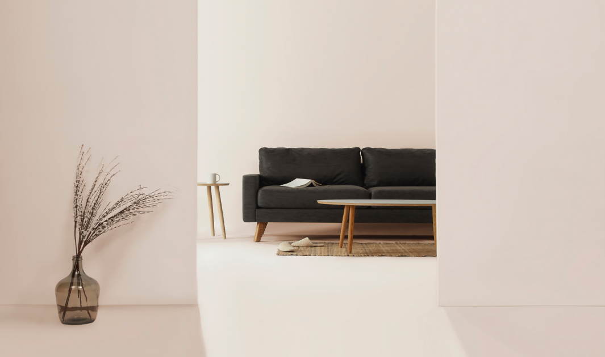

Mod Studio
Modern Web Studio

Boigraphy
Katya
Mills
Art Director
Scenography / Styling / Creative Photography / Design
“The more I deal with the work as something that is my own, as something that is personal, the more successful it is.”